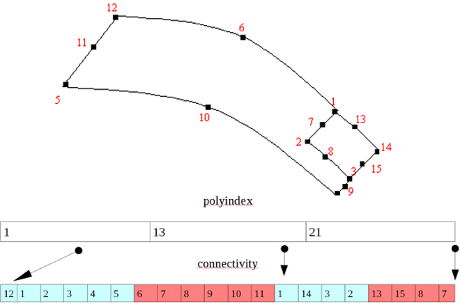

|
|
| med_err MEDmeshPolygon2Wr |
( |
const med_idt |
fid, |
|
|
const char *const |
meshname, |
|
|
const med_int |
numdt, |
|
|
const med_int |
numit, |
|
|
const med_float |
dt, |
|
|
const med_entity_type |
entitype, |
|
|
const med_geometry_type |
polytype, |
|
|
const med_connectivity_mode |
cmode, |
|
|
const med_int |
indexsize, |
|
|
const med_int *const |
polyindex, |
|
|
const med_int *const |
connectivity |
|
) |
| |
Cette routine permet l'écriture des connectivités de polygones.
- Paramètres
-
| fid | Identificateur du fichier. |
| meshname | Nom du maillage, de longueur maximum MED_NAME_SIZE . |
| numdt | Numéro de pas de temps de l'étape de calcul (MED_NO_DT si pas de numéro de pas de temps). |
| numit | Numéro d'itération de l'étape de calcul (MED_NO_IT si pas de numéro d'itération). |
| dt | Date du pas de temps si le numéro de pas de temps est différent de MED_NO_DT. |
| entitype | Type d'entité (med_entity_type). |
| polytype | Type de polygon MED_POLYGON | MED_POLYGON2. |
| cmode | Mode de connectivité (nodale ou descendante). |
| indexsize | Taille du tableau. |
| polyindex | Tableau d'index des polygones. |
| connectivity | Tableau des connectivités du type géométrique d'élément du maillage. |
- Valeurs retournées
-
| med_err | retour négatif en cas d'erreur, Zéro sinon. |
Cette routine permet l'écriture des connectivités de polygones simple et quadratique.
- Quelque soit le mode de connectivité (nodale/descendante), la numérotation optionnelle n'est jamais utilisée dans la définition des connectivités.
- Le seul mode de stockage du tableau connectivity possible est le mode non entrelacé.
- Polygones Quadratiques : Exemples de deux polygones quadratiques : poly1 : 12,1,2,3,4,5 + 6,7,8,9,10,11 et poly2 : 1,14,3,2 + 13,15,8,7

- Les polygones quadratiques s'utilisent comme les polygones simples mais uniquement en connectivité MED_NODAL .
- Pour les polygones quadratiques l' indexsize est de même taille que pour les polygones simples.
- Pour chaque polygones quadratiques, les noeuds milieux apparaissent après l'ensemble des noeuds du polygone simple associé.
Définition à la ligne 46 du fichier MEDmeshPolygon2Wr.c.
|